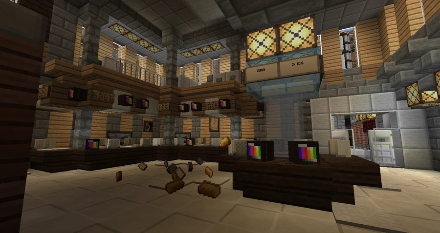

Broville Stock Exchange
Broville Stock Exchange, also called the SExchange, is a financial market above a bank and connected to the neighboring investment building.
Function and financial satire
Broville Stock Exchange, humorously shortened to SExchange, is the city’s stock market. Its introduction portrays it as a place for wealthy people to amuse themselves irresponsibly.
Its described primary function is to let corporations, governments, municipalities and other business bodies raise capital or earn profits by channeling investors’ savings into ventures that the text satirically calls ludicrous and illegitimate. Its secondary function is the trading of securities between investors for cash, allowing them to exit positions and reduce exposure to risk.



Architecture and occupancy
The exterior uses birch and spruce wood paneling, while the interior has more somber tones and dim lighting. The building stands above a bank: the first and second floors house the exchange, and the upper floors accommodate various investors.
A skybridge connects the building to the adjacent Broville Investment Bankers group building.
See also
Sources and references
- v11.4.4 maps, signs, books and items World records
- The Broville Stock Exchange (The Bro S Ex) · Broville Wiki Community archive
Text adapted and expanded from The Broville Stock Exchange (The Bro S Ex) (contributors and history, revision 5032). Adapted text is available under CC BY-SA 3.0.